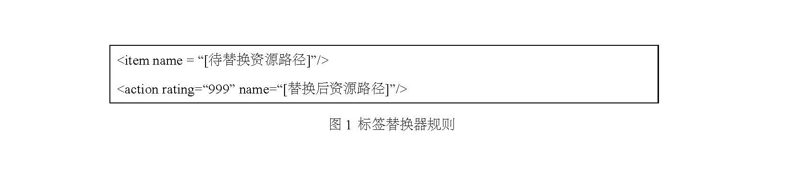
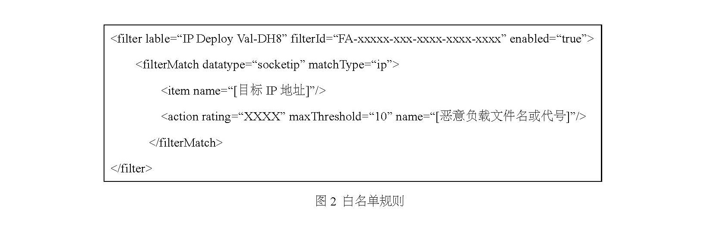
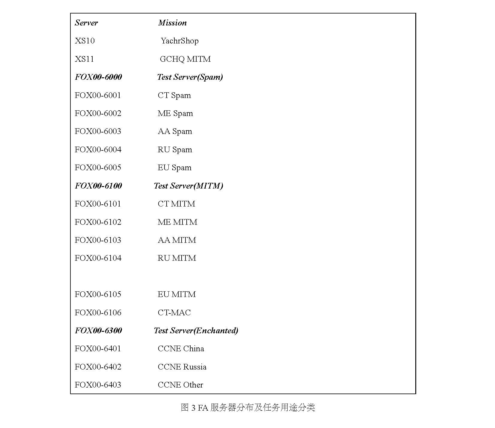
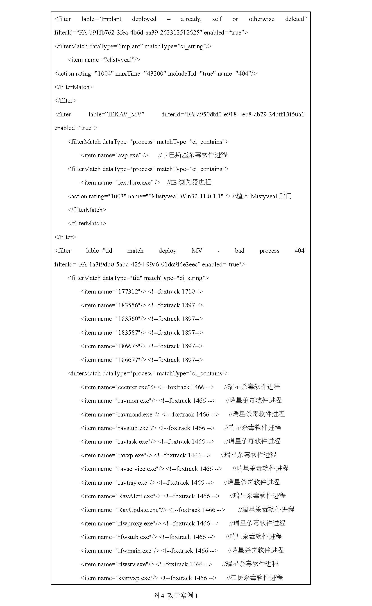
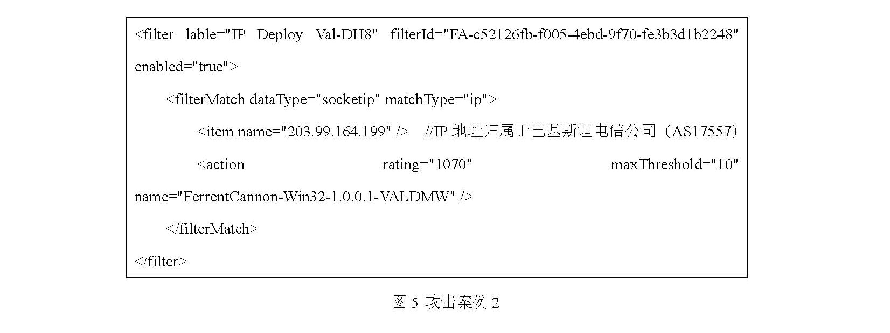

转自 CVERC
近日，国家计算机病毒应急处理中心对美国家安全局（NSA）“酸狐狸”漏洞攻击武器平台（FoxAcid）进行了技术分析。该漏洞攻击武器平台是美国国家安全局（NSA）特定入侵行动办公室（TAO，也被称为“接入技术行动处”）对他国开展网络间谍行动的重要阵地基础设施，并成为计算机网络入侵行动队（CNE）的主力装备。该漏洞攻击武器平台曾被用于多起臭名昭著的网络攻击事件。近期，中国多家科研机构先后发现了一款名为“验证器”（Validator）木马的活动痕迹，该恶意程序据信是NSA“酸狐狸”漏洞攻击武器平台默认使用的标配后门恶意程序。这种情况突出表明，上述单位曾经遭受过美国NSA“酸狐狸”漏洞攻击武器平台的网络攻击。
一、基本情况
“酸狐狸”漏洞攻击武器平台（FoxAcid）（以下简称“酸狐狸平台”）是特定入侵行动办公室（TAO）打造的一款中间人劫持漏洞攻击平台，能够在具备会话劫持等中间人攻击能力的前提下，精准识别被攻击目标的版本信息，自动化开展远程漏洞攻击渗透，向目标主机植入木马、后门。特定入侵行动办公室（TAO）主要使用该武器平台对受害单位办公内网实施中间人攻击，突破控制其办公网主机。该武器平台主要被特定入侵行动办公室（TAO）用于突破控制位于受害单位办公内网的主机系统，并向其植入各类木马、后门等以实现持久化控制。酸狐狸平台采用分布式架构，由多台服务器组成，按照任务类型进行分类，包括：垃圾钓鱼邮件、中间人攻击、后渗透维持等。其中特定入侵行动办公室还针对中国和俄罗斯目标设置了专用的酸狐狸平台服务器。
二、具体功能
酸狐狸平台一般结合“QUANTUM（量子）”和“SECONDDATE（二次约会）”等中间人攻击武器使用，对攻击目标实施网络流量劫持并插入恶意XSS脚本，根据任务类型和实际需求，XSS脚本的漏洞利用代码可能来自一个或多个酸狐狸平台服务器。该漏洞攻击武器平台集成了各种主流浏览器的零日（0day）漏洞，可智能化配置漏洞载荷针对IE、火狐、苹果Safari、安卓Webkit等多平台上的主流浏览器开展远程漏洞溢出攻击。攻击过程中该平台结合各类信息泄露漏洞对目标系统实施环境探测，并依据探测结果对漏洞载荷进行匹配筛选，选择合适的漏洞开展攻击。如果目标价值很高，且目标系统版本较新、补丁较全，该平台会选择利用高价值零日漏洞实施攻击；相反，如果目标价值较低且系统版本老旧，该平台会选择较低价值的漏洞甚至已公开漏洞实施攻击。一旦漏洞被触发并符合入侵条件，就会向目标植入间谍软件，获取目标系统的控制权，从而实现对目标的长期监视、控制和窃密。
三、技术分析
（一）技术架构
酸狐狸平台服务器采用微软公司的Windows 2003 Server和IIS作为基础操作系统和Web应用服务器。通常部署于具有独立IP地址的专用服务器上，对目标系统进行攻击筛选以及漏洞载荷分发，完成对目标的攻击过程，其攻击范围包括Windows、Linux、Solaris、Macintosh各类桌面系统及Windows phone、苹果、安卓等移动终端。
酸狐狸平台服务器之间采用美国国家安全局（NSA）的CDR加密数据传输规则，并采用分布式架构，底层服务器将截获的数据加密后向顶层汇聚，顶层服务器解密后按照一定的文件结构存放，以便采用Foxsearch等情报检索工具进行检索。完整的酸狐狸平台服务器由三部分组成，即：基础服务软件（基于Perl脚本开发）、插件和恶意程序载荷（Payload）。
酸狐狸平台主要以中间人攻击方式投递漏洞载荷。该武器平台根据目标设备信息进行自动化的无感植入，具体步骤如下：
1.目标网络会话被重定向劫持之后，该武器平台的信息搜集模块首先利用信息泄露手段获取目标设备信息；
2.根据获取的信息匹配筛选符合攻击条件的漏洞载荷，并将载荷嵌入到请求响应页面中实现自动化投递；
3.判断漏洞攻击的结果是否成功，并根据返回信息向目标系统上传指定类型的持久化载荷。
为实施上述攻击过程，酸狐狸平台提供了自定义逻辑接口，特定入侵行动办公室的计算机网络入侵行动队成员可以在服务器上配置一系列过滤器规则，对来自受害者的网络请求进行处理，具体包括：
1.复写器（Modrewrite），替换请求中的指定资源；
2.前置过滤器（PreFilter），根据受害者请求特征判断是否是攻击对象，如果不是则反馈HTTP状态码404或200（并指向特定资源）；如果受害者属于攻击对象范围，则传递给漏洞利用模块，并由漏洞利用模块自动选择相应漏洞进行攻击；
3.后置过滤器（PostFilter），漏洞攻击成功后，根据侦查到的目标主机信息（包括：软硬件环境信息、进程信息等）判断是否符合下一步进行植入操作的条件，对于符合植入条件的目标，可指定向目标植入的恶意程序载荷（Payload）。
（二）主要功能组件
1.项目跟踪器（Project Tracker）
计算机网络入侵行动队使用项目跟踪器管理所有使用酸狐狸平台的行动任务，采用PHP+Javascript编写，提供非常简洁的Web管理界面，行动队成员通过背景色了解自己的权限，背景色为红色代表只有只读权限，绿色代表具有修改权限，黑色为管理员权限。行动队成员通过项目跟踪器可以完成的功能包括：管理现有行动任务、添加过滤器、增加新任务、增加新服务器、增加服务器IP地址、查看近三日内即将启动或完成的任务等。
2.标签编辑器（Tag Maker）
计算机网络入侵行动队可使用标签编辑器为指定任务下的服务器添加标签（Tag），每个标签对应一套攻击技战术，使用者可配置标签的TLN、HMAC、MSGID等唯一性标识，其中MSGID与特定的攻击工具相关，如：针对路由器、防火墙等植入的间谍软件SECONDDATE对应的MSGID为“ace02468bdf13579”。此外，标签还可以指定植入方式，不同的恶意负载根据其特性应对应选择不同的植入方式，如：SECONDDATE或MAGICBEAN应采用“WEB”植入方式，YATCHSHOP应采用“SPAM”方式，QUANTUMINSERT则应采用“QI”方式。
3.SECONDDATE任务自动化脚本工具“FABULOUSFABLE”
SECONDDATE是CNE行动队通过酸狐狸平台进行分发的主要恶意植入体之一，因此酸狐狸平台提供了专门为SECONDDATE设计的自动化任务脚本工具“FABULOUSFABLE”（简称“FABFAB”）。FABFAB可以代替行动队人员与SECONDDATE植入体交互，并按照事先设定好的逻辑，自动化分发规则，并收集规则执行日志和相关回传数据。
4.标签替换器（MODREWRITES）
标签替换器是酸狐狸平台的核心组件之一，通过标签替换器，计算机网络入侵行动队可以任意替换被其劫持的网络流量中的资源，标签替换器的规则采用XML格式编写，与过滤器相同。如图1所示，一旦流量中的资源路径与规则特征相匹配，则会被替换。

实际上，标签替换器规则还支持对路径或资源中的部分字符串进行替换，具有较好的适应性和可扩展性。
5.白名单规则（CASTLECREEK Whitelist）
白名单规则基于后置过滤器，可以对指定IP地址的主机植入指定的恶意负载，规则样例如图2所示。

6.封装器（Wrappers）
封装器主要用于辅助后续植入的恶意负载实现持久化驻留。其中一种封装器名为DireScallop，专门针对名为DeepFreeze的系统还原工具，该工具多用于网吧中并实现计算机重启后对系统进行自动还原，DireScallop可以在不重启的条件下中止DeepFreeze运行，植入恶意负载后再重新启用DeepFreeze，使恶意负载被记录在还原镜像中，以实现目标主机重启后仍可保持恶意负载的可用性。

（三）植入的主要恶意负载
1.SECONDDATE（二次约会）
针对路由器和防火墙的间谍恶意程序，可在网络设备中潜伏并根据酸狐狸平台组件分发的规则对网络流量数据进行窃密、劫持、替换等恶意操作。
2.Validator
Validator是酸狐狸平台默认使用的后门恶意程序，可实现对目标的长期控制。
3.MistyVeal
MistyVeal是Validator后门的增强版，并且可以配置为按细粒度递增时间间隔进行回联，以逃避特征检测。并且会利用IE浏览器作为回联的渠道，并可复用IE浏览器的代理服务器设置，且仅对IE浏览器有效。
4.Ferret Cannon
Ferret Cannon是可执行程序投送器，借助Ferret Cannon，酸狐狸平台可以目标投送多种间谍软件工具，如：United Rake，Peddle Cheap，PktWench和Beach Head等，可执行程序可以是.dll或.exe文件。
四、运作方式
基于美国国家安全局（NSA）前雇员斯诺登公开的资料，我们可以部分分析出酸狐狸平台的运作方式如下：
（一）人员编制
特定入侵行动办公室的计算机网络入侵行动队中会设置一名或多名酸狐狸项目教官，这些教官可以领导一个或多个酸狐狸行动组，行动组中包括多名计算机网络入侵行动队队员，分别负责直接支援特定的网络入侵行动、维护酸狐狸服务器、软件等基础设施以及根据任务需要开发和测试新的插件、漏洞利用代码、辅助入侵工具和木马后门等恶意负载。
（二）阵地基础设施建设
如图3所示，特定入侵行动办公室在全球范围内部署酸狐狸平台服务器，其中编号前缀为XS的服务器是统筹多项任务的主服务器，值得注意的是编号为XS11的服务器明确被分配给英国情报机构“英国政府通信总部”（GCHQ）开展中间人攻击行动；编号为FOX00-60XX系列的酸狐狸平台服务器用于支援垃圾钓鱼邮件行动，服务器按照目标所在区域进行了分布式部署，包括中东地区、亚洲地区、欧洲地区、俄罗斯和其他特定区域；编号为FOX00-61XX系列的服务器则用于支援中间人攻击行动，服务器分布与FOX00-60XX系列相同；值得注意的是，编号为FOX00-64XX系列的服务器用于支援计算机网络入侵行动队漏洞攻击行动，其中编号为FOX00-6401的服务器专门针对中国，FOX00-6402号服务器针对俄罗斯，FOX00-6403号服务器则针对其他目标。另外，FOX00-6300号服务器可能被用于代号为“ENCHANTED”的攻击行动。
（三）攻击实例
1.案例1

如图4所展示的酸狐狸平台服务器上的过滤器规则片段，可以判断该服务器主要针对中国的主机目标进行攻击，过滤器中重点针对目标环境中的卡巴斯基杀毒软件、瑞星杀毒软件、江民杀毒软件等中国地区流行的杀毒软件进程进行了匹配并进行了可植入条件判断。
2.案例2

如图5所展示的服务器上的过滤器规则片段，可以判断该FA服务器被用于攻击IP地址“203.99.164[.]199”的目标，并将向目标植入前文中提到的FerrentCannon恶意负载，从而进一步向目标投送其他间谍软件。经查，IP地址“203.99.164[.]199”归属于巴基斯坦电信公司。
五、总结
上述技术分析表明，美国NSA“酸狐狸”漏洞攻击武器平台仍是目前美国政府的主战网络武器之一，有三点结论值得国际社会严密关注：一是该漏洞利用平台是美国国家安全局NSA特定入侵行动办公室（TAO）下属计算机网络入侵行动队的主战装备，在计算机网络入侵行动队单独或配合进行的网络入侵行动中得到广泛应用，攻击范围覆盖全球，其中中国和俄罗斯是重点目标。二是该武器平台采用了高度模块化结构，具有较高的可扩展性，同时可以与特定入侵行动办公室的项目管理工具高度集成，实现高效跨行动支援。三是支持跨平台攻击，与特定入侵行动办公室（TAO）的其他网络武器进行集成后，其几乎可以攻击所有具有网络连接功能的设备，是名副其实的网络“黑洞”。
中国国家计算机病毒应急处理中心对全球互联网用户发出预警，中国的科研机构绝不是受到NSA网络攻击的唯一目标，全球范围内的政府机构、科研机构和商业企业，都可能正在被酸狐狸平台远程控制，平时远程窍取重要数据，战时瘫痪重要信息基础设施，为美国式的“颜色革命”铺平道路。
Last modified on 2022-09-27